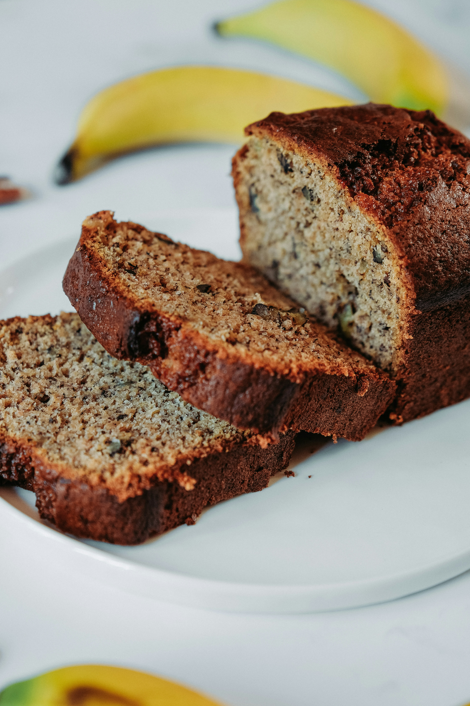

Banana Bread

Home
Description
A soft yet moist banana bread, that'll have your kids or spouse
asking for the bananas to go over-ripe just so you'll make it!
Ingredients
- 2 cups all-purpose flour
- 3/4 Teaspoons baking soda
- 1/2 Teaspoons Kosher salt
- 2 cups mashed ripe bananas. (4 medium)
- 1 Teaspoons vanilla extract
- 1/2 cup butter (1 stick), softened
- 1/2 cup granulated sugar
- 1/2 cup brown sugar
- 2 large eggs
Steps
- Preheat oven to 325 degrees F. Grease 8 1/2"-x 1 1/2" metal loaf
pan. In a medium bowl, with wire whisk, stir together flour, baking
soda, and salt. In a small bowl, stir together bananas and vanilla
until blended.
- In a large bowl, with mixer on medium speed, beat butter and both
sugars until light and fluffy. Beat in eggs, 1 at a time. Reduce speed
to low; alternately add flour mixture and banana mixture, beginning and
ending with flour mixture and occasionally scraping bowl with rubber spatula.
Beat batter just until blended.
- Pour batter into prepared pan. Bake until toothpick inserted in center comes
out clean, about 1 hour. Cool loaf in pan on wire rack 10 minutes; remove from
pan and cool completely on rack before slicing.